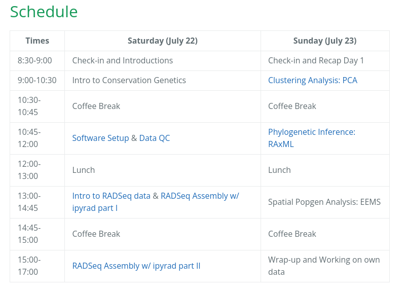

RADcamp NYC
Columbia University, 2023
Lecture 1: Introduction to RADseq and the terminal
Objectives of this workshop
1. Understand and describe the structure and format of RAD-seq data.
2. Assemble RAD-seq data sets using ipyrad to produce files for analyses.
3. Learn about evolutionary analyses using RAD-seq data.
4. Learn new bioinformatic skills: bash, linux, Python, jupyter.
Our schedule for today
Please follow along:
https://radcamp.github.io/NYC2023/

Comparative genomics
It's an exciting time to be working in evolutionary genomics!
Genomic technologies are revolutionizing the study of ecology and evolution.

Comparative genomics
Methods for efficiently sequencing entire genomes, or subsets of genomes.

Comparative genomics
By sampling thousands of genomic loci we can fit complex models of evolution to infer phylogeny, demography, introgression, selection, and more.

Comparative genomics
This has revolutionized our understand of evolution, revealing new insights into historical biogeography, admixture, speciation and selection.

What is RAD-seq (and its variants)?
RAD-seq is a method for subsampling a reduced represenation of a genome by selecting and sequencing genomic fragments near restriction enzyme recognition sites. The goal is to efficiently obtain orthologous genomic regions/loci across many samples to identify genetic variation, without the need to sequence entire genomes.
A brief history of RAD-seq
RAD-seq was first developed in 2007 by Miller et al., which introduced the
concept for identifying a large and consistent set of genetic markers for
which a SNP microarray could be designed.
A brief history of RAD-seq
A breakthrough came in 2008 when Baird et al. designed RAD-seq markers for Illumina sequencing. They applied RAD-seq to a crossing population of 96 sticklebacks using >13K SNPs to identify variants associated with armored plating.
A brief history of RAD-seq
In 2010 Emerson et al. applied RAD-sequencing to identify variants in natural populations of a mosquito to reconstruct recent phylogeography. This was the first application of RAD-seq to study natural variation, as opposed to genotyping crosses. They also introduced the stacks software tool to assemble RAD data.
A brief history of RAD-seq
In 2011 and 2012, respectively, the GBS and ddRAD variants of RAD-seq were introduced, providing new approaches to generating RAD-seq libraries were cheaper and more efficient.
A brief history of RAD-seq
In 2013 two paper by Eaton and Wagner, respectively, applied RAD-seq to study phylogeny and introgression in multi-species datasets, showing that RAD-seq can be applied to highly divergent samples.
A brief history of RAD-seq
In 2013/2014 Eaton introduced pyrad as a software tool to de novo assemble RAD-seq datasets, providing much improved assembly of phylogenetic-scale datasets compared to the stacks approach.
A brief history of RAD-seq
In 2016-2017 the Glen lab at UGA introduced the Adapterama series introducing a new generation of cheaper and more efficient RAD-seq methods. aton introduced pyrad as a software tool to de novo assemble RAD-seq datasets, providing much improved assembly of phylogenetic-scale datasets compared to the stacks approach.
What is RAD-seq (and its variants)?
Variant methods differ in their cost, complexity, and efficiency. We used the 3RAD method, an inexpensive and efficient variant of RAD-seq.

Frequently asked questions
Why not just sequence the entire genome at low-coverage?
Low coverage whole genome sequencing (WGS) has had a resurgence in popularity
as the cost of sequencing has decreased, and new imputation methods have been
developed for genotyping very low coverage data.
However, many organisms have very large genomes which can make the cost prohibitive.
Also, the analysis of WGS data requires a good reference genome, and imputation of
low coverage data additionally requires a high quality/depth reference panel, which
is a large additional cost.
For biodiversity research on non-model organisms it is faster, easier, and usually
sufficient, to use RAD-seq rather than develop many other additional genetic resources.
Frequently asked questions
Why is missing data a problem in RAD-seq?
Part of the efficiency of RAD-seq is accomplished through multiplexing samples, and
errors in this step can lead to variable coverage across samples. In addition, some
restriction fragments will be present in only some samples and not others. As a
consequence, assembled RAD data sets are often sparse, containing many loci that are
present in only a subset of samples, and fewer loci present in every single sample.
This problem is not unique to RAD-seq, but has received significant attention. It
does need to be accommodated in many downstream analyses.
We will discuss methods for this tomorrow in our analysis
workshop.
Frequently asked questions
Can I detect selection, or perform GWAS using RAD-seq?
Yes, RAD-seq can be used for both of these goals (e.g., Nadeau et al. 2013).
However, the goal of your study are important determinants of whether or not RAD-seq
is more efficient than WGS. Detecting selection or trait associations is much better
when mapping RAD or WGS to a reference genome, as opposed to anonymous de novo loci.

Frequently asked questions
At what phylogenetic scale can I use RAD-seq?
RAD-seq data generated for distantly related samples are expected to share
fewer orthologous fragments in common, leading to increased missing data. At what
scale is RAD-seq no longer useful? It depends on many factors: rate of
substitutions and genome size change between samples; how many fragments, i.e.,
which enzymes are used; the type of protocol (shearing vs digestion); and sequencing
coverage.
However, RAD-seq has been successfully applied to phylogenetic
questions spanning >30 Mya (oaks; Eaton et al. 2015), >60 Mya (Viburnum; Eaton et al. 2017).
The efficiency of RAD vs. [others] depends on the scale and density of your taxon
sampling, and planned analyses.
RAD-seq as a clade-level genomic dataset
RAD-seq can be an efficient method for generating both population-scale and
phylogenetic-scale datasets simultaneously. This is especially useful for
biodiversity research on clades.
For example, you may obtain tens of thousands
of loci with shared data among close relatives, allowing for fine-scale
inference of population structure, admixture, phylogeography, and selection.
Among more distant clades perhaps only a few thousand loci are
shared on average among samples, but this still sufficient to infer
phylogenetic relationships.
A brief introduction to the command line
Basic concepts: terminal and filesystemsA brief introduction to the command line
Lines starting with (#) are only comments, not executed
# This is the general format of unix command line program
$ program -option1 -option2 target
# e.g., the 'pwd' program with no option or target prints your cur dir
$ pwd
/home/deren/
A brief introduction to the command line
Lines starting with (#) are only comments, not executed
# This is the general format of unix command line program
$ program -option1 -option2 target
# the 'ls' program lists contents of the current directory
$ ls
file1.txt file2.txt
A brief introduction to the command line
Lines starting with (#) are only comments, not executed
# This is the general format of unix command line program
$ program -option1 -option2 target
# the -l option of the 'ls' program changes the format of the result
$ ls -l
-rw-rw-r-- 1 deren deren 2046 Nov 17 2021 file1.txt
-rw-rw-r-- 1 deren deren 1596 Sep 30 2020 file2.txt
A brief introduction to the command line
Lines starting with (#) are only comments, not executed
# This is the general format of unix command line program
$ program -option1 -option2 target
# providing a target to the 'ls' program lists the contents of a differnt dir
$ ls -l ../data
-rw-rw-r-- 1 deren deren 2046 Dec 12 2023 big-file-1.txt
-rw-rw-r-- 1 deren deren 1596 Nov 22 2023 big-file-2.txt
-rw-rw-r-- 1 deren deren 1596 Nov 22 2023 big-file-3.txt
A quick introduction to the command line
Lines starting with (#) are only comments, not executed
# This is the general format of unix command line program
$ program -option1 -option2 target
# The ipyrad CLI can be used in a terminal
$ ipyrad -p params-data.txt -s 123 -t 4 -c 16
Hierarchical File System
Always know where you are and where your files are.
# The root (top) of the entire filesystem (used for writing full paths).
$ /
# Here, in my current directory (used for writing relative paths).
$ ./
# Up one directory from my current directory (a relative path).
$ ../
Hierarchical File System
Always know where you are and where your files are.
/home/deren/data/sequences.fastq
Hierarchical File System
The program 'ls' (list) shows the contents at a path.
# show the files and folders in a location (default target is cur dir)
$ ls
# show result as a list for cur dir.
$ ls -l ./
# show another location on the filesystem
$ ls -l /bin/
# move to a new location. This becomes your new cur dir.
$ cd folder/
Print working directory (pwd)
Your location (current directory) starts from / (the root) and is described by a nested set of directory names leading to your location.
# use 'pwd' program with no option or target to ask where am I now?
$ pwd
/home/deren/
Directories (folders)
You can make new directories and change your location.
# make a new directory (mkdir is the program, genomics is the target)
$ mkdir genomics
# change directory (move) into the new directory and run pwd again
$ cd genomics
$ pwd
/home/deren/genomics
Reading/viewing files
Viewing data is fundamental to data analysis, but can be challenging when data files are very large.
# the less command shows just the beginning of a file interactively
$ less very_large_file.txt
# the cat command streams the entire contents of a file
$ cat very_large_file.txt
# gzip (or zcat or zless) to decompress files
$ zcat very_large_file.txt.gz
# pipes (|) are used to pass results of one command to the next
$ zcat very_large_file.txt.gz | grep "ATCCG"
Why is this important? HPC/Servers
1. It is efficient. 2. On a server it may be the only or simplest option.
# connect to a remote server (large computer)
$ (laptop) ssh username@university.hpc.edu
# change directory to where your files are located
$ (remote) cd /user/deren/
# create a directory for your new research
$ (remote) mkdir genomics/
# download your data into the directory
$ (remote) wget https://novogene.com/user/password/...
# run assembly of your data
$ (remote) ipyrad -n test ...